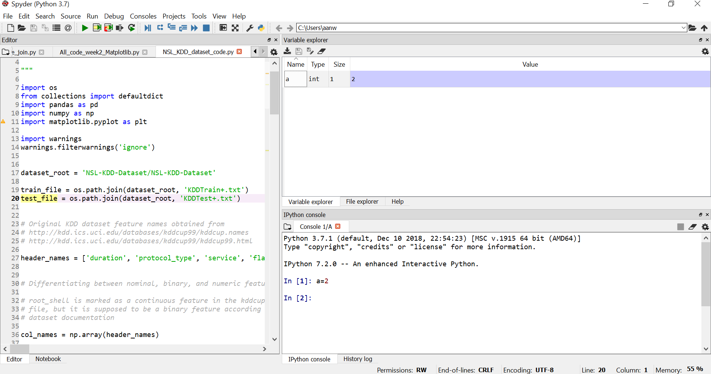

Python is not only a programming language, but often also refers to the standard implementation of the interpreter (technically referred to as CPython) that actually runs the python code on a computer.
There are also many different environments through which the python interpreter can be used. Each environment has different advantages and is suitable for different workflows. One strength of python is that it is versatile and can be used in complementary ways, but it can be confusing for beginners so we will start with a brief survey of python environments that are useful for scientific computing.
The standard way to use the Python programming language is to use the python interpreter to run python code. The python interpreter is a program that reads and executes the python code in files passed to it as arguments. At the command prompt, the command python is used to invoke the python interpreter.
For example, to run a file my-program.py that contains python code from the command prompt, use:
$ python my-program.py
We can also start the interpreter by simply typing python at the command line, and interactively type python code into the interpreter.
This is often how we want to work when developing scientific applications, or when doing small calculations. But the standard python interpreter is not very convenient for this kind of work, due to a number of limitations.
IPython is an interactive shell that addresses the limitation of the standard python interpreter, and it is a work-horse for scientific use of python. It provides an interactive prompt to the python interpreter with a greatly improved user-friendliness.
Some of the many useful features of IPython includes:
• Command history, which can be browsed with the up and down arrows on the keyboard.
• Tab auto-completion.
• In-line editing of code.
• Object introspection, and automatic extract of documentation strings from python objects like classes and functions.
• Good interaction with operating system shell.
• Support for multiple parallel back-end processes that can run on computing clusters or cloud services like Amazon EE2.
IPython notebook is an HTML-based notebook environment for Python, similar to Mathematica or Maple. It is based on the IPython shell, but provides a cell-based environment with great interactivity, where calculations can be organized and documented in a structured way.
Although using a web browser as graphical interface, IPython notebooks are usually run locally, from the same computer that run the browser. To start a new IPython notebook session, run the following command:
$ ipython notebook
from a directory where you want the notebooks to be stored. This will open a new browser window (or a new tab in an existing window) with an index page where existing notebooks are shown and from which new notebooks can be created.
The Anaconda Python distribution comes with many scientific computing and data science packages and is free, including for commercial use and redistribution. It also has add-on products such as Accelerate, IOPro, and MKL Optimizations, which have free trials and are free for academic use. Anaconda packages most of the popular python libraries like numpy, pandas, sciki- learn and so on. You can install additional packages with conda install within your virtual environment created by Anaconda.
Spyder is a MATLAB-like IDE for scientific computing with python. It has the many advantages of a traditional IDE environment, for example that everything from code editing, execution and debugging is carried out in a single environment, and work on different calculations can be organized as projects in the IDE environment.
Some advantages of Spyder:
• Powerful code editor, with syntax high-lighting, dynamic code introspection and integration with the python debugger.
• Variable explorer, IPython command prompt.
• Integrated documentation and help.

Google Colab
Colab is a hosted Jupyter Notebook service that requires no setup to use and provides free access to computing resources, including GPUs and TPUs. Colab is especially well suited to machine learning, data science, and education (Source: https://colab.google/).